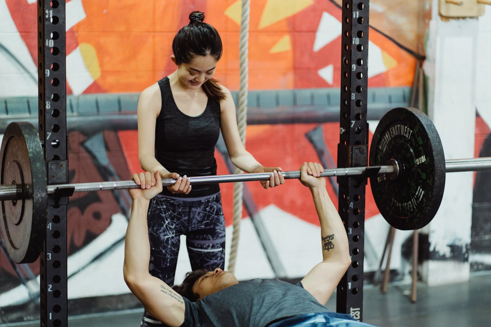
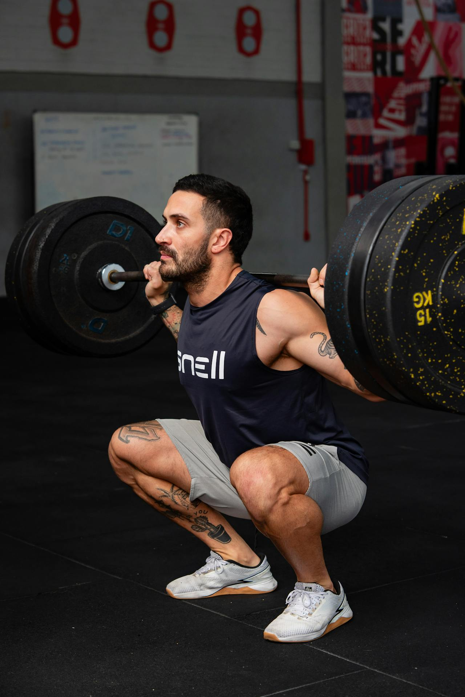
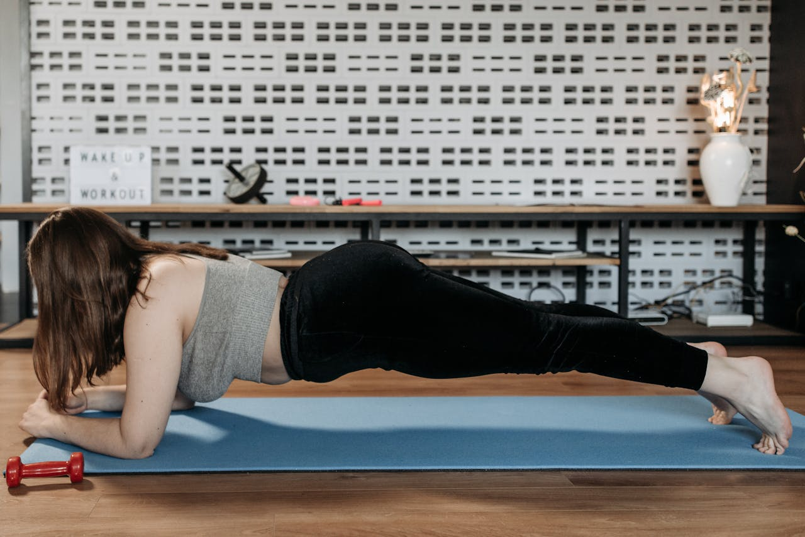

No MaxFit Portal, acreditamos que existem diversas formas de evoluir o corpo e a mente através do treino. Entre as principais estão a musculação e a calistenia, duas modalidades que, apesar de diferentes, têm o mesmo objetivo: melhorar a saúde e a qualidade de vida.
A musculação utiliza pesos e equipamentos, enquanto a calistenia usa o próprio peso corporal. Ambas podem ser combinadas para resultados ainda melhores.
🏋 Musculação e Calistenia 🤸 - MaxFit Portal
Nossa Introdução
Objetivos das Modalidades 🎯
Tanto a musculação quanto a calistenia ajudam no desenvolvimento físico. Veja alguns objetivos em comum:
- Ganho de massa muscular
- Emagrecimento e queima de gordura
- Aumento de força
- Melhora do condicionamento físico
- Prevenções de lesões e problemas de saúde
Tanto a musculação quanto a calistenia ajudam no desenvolvimento físico. Veja alguns objetivos em comum:
- Ganho de massa muscular
- Emagrecimento e queima de gordura
- Aumento de força
- Melhora do condicionamento físico
- Prevenções de lesões e problemas de saúde
Comparação de tipos de treino 📊
| Aspecto | Musculação | Calistenia |
|---|---|---|
| Tipo de carga | Pesos e máquinas | Peso do próprio corpo |
| Local | Academia | Qualquer lugar |
| Foco | Hipertrofia e força | Força, controle corporal |
| Equipamentos | Necessários | Poucos ou nenhum |
| Nivel de dificuldade | Ajustável por carga | Progressão por movimentos |
Recomendações para evoluir ✅
Independente da escolha, algumas práticas são essenciais:
- Ter constância nos treinos
- Manter uma boa alimentação
- Dormir bem e respeitar o descanso
- Executar os movimentos corretamente
- Evoluir aos poucos (progressão)
- Evitar comparações e focar no próprio progresso
Exemplos de Exercícios
Supino

Agachamento

Prancha

Pistol Squat

Exexcução de exercícios
Links para mais informações 🌐
Conclusão
Não existe uma modalidade melhor que a outra — existe aquela que melhor se adapta a você. A musculação e a calistenia podem, inclusive, ser combinadas para gerar resultados ainda mais completos.
O mais importante é começar, manter a disciplina e nunca desistir da evolução.